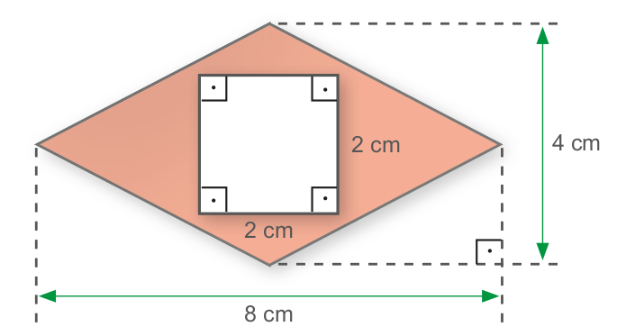

CAPÍTULO 3 - Cálculo da área de polígonos pela decomposição em figuras planas
Observe o polígono a seguir:


1. Como é possível calcular a área desse polígono? Troque ideias com um colega e verifiquem as possibilidades.
a) Registrem no caderno e depois calculem.
Para calcular a área de algumas figuras planas, devemos decompô-las em polígonos aos quais suas fórmulas sejam conhecidas para o cálculo da área. Dessa forma, a área da figura plana será igual à soma das áreas calculadas.
Observe outra situação. Vamos calcular a área da região colorida da figura.
Nesse caso, devemos calcular a área do quadrado e subtraí-la da área do losango.
Área do quadrado: \(\ell^{2} = 2^{2} = 4cm^{2}\).
Área do losango: \(\dfrac{D \cdot d}{2} = \dfrac{8 \cdot 4}{2} = 16cm^{2}\)
Área da região colorida: 16 cm2 - 4 cm2 = 12 cm².
Logo, a área da região colorida é igual a 12 cm².
94
UNIDADE 3 - CAPÍTULO 3
ENCONTRE SOLUÇÕES
1. Em seu caderno, calcule a área e o perímetro das figuras planas a seguir.
a)
b)
2. Em seu caderno, calcule a área da região colorida.

a)

b)
3. Joana pintou uma tela e mandou colocar uma moldura de 2 cm de largura.

a) Qual é a área inicial da tela, antes da colocação da moldura?
b) Qual é o perímetro da tela sem a moldura?
c) Qual é a área total do quadro, com a moldura?
d) Qual é o novo perímetro do quadro, após a colocação da moldura?
4. Uma folha de papel retangular medindo 12 cm por 18 cm (figura 1) foi dobrada, conforme a figura 2.
Sabendo que CE = 12 cm, qual a área do polígono ADCEB?
5. Elabore uma situação-problema envolvendo figuras geométricas planas e o conceito do cálculo de área de uma superfície. Troque seu caderno com um colega, para que um resolva o problema do outro e, juntos, verifiquem se a resolução foi feita corretamente.
95
UNIDADE 3 - CAPÍTULO 3
6. Uma piscina retangular tem 6 m de largura por 12 m de comprimento. Em seu contorno, foi colocado piso antiderrapante com 2 m de largura, exceto nos cantos, conforme a figura.

Quantos m² de piso foram colocados ao redor da piscina?
7. Para participar de uma festa à fantasia, um grupo de amigos fez camisolões com a estampa de monstros, conforme o desenho a se- guir. Quantos m2 de tecido foram gastos na confecção de cada camisolão?

8. (OBMEP) Uma tira retangular de cartolina, branca de um lado e cinza do outro, foi dobrada como na figura, formando um polígono de 8 lados. Qual é a área desse polígono?
a) 216 cm²
b) 265 cm²
c) 348 cm²
d) 432 cm²
e) 576 cm²
9. (OBMEP) A figura representa um polígono em que todos os lados são horizontais ou verticais e têm o mesmo comprimento. O perímetro desse polígono é 56 cm. Qual é sua área?
a) 25 cm2
b) 50 cm2
c) 75 cm2
d) 100 cm2
e) 125 cm2
96
UNIDADE 3 - CAPÍTULO 3